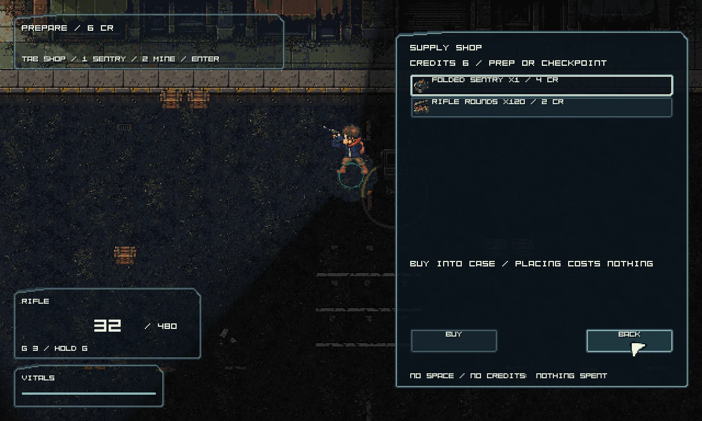
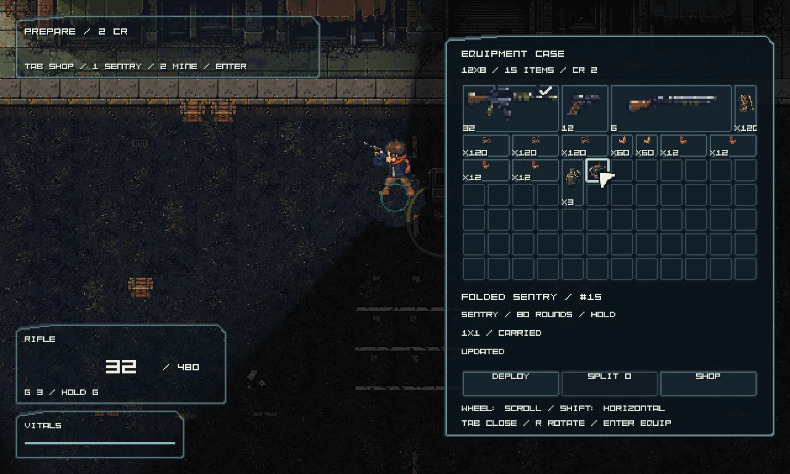
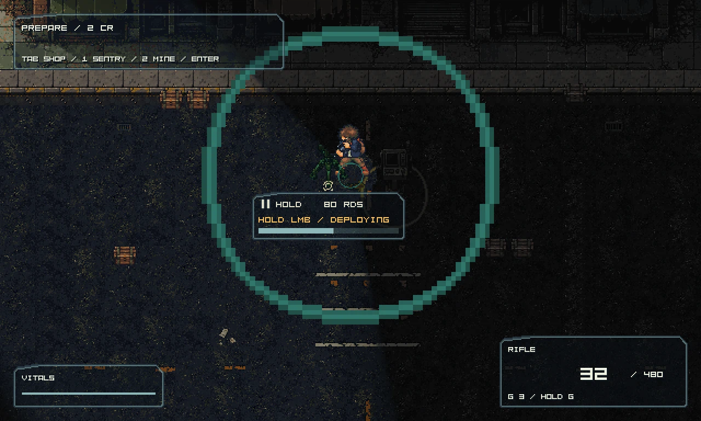
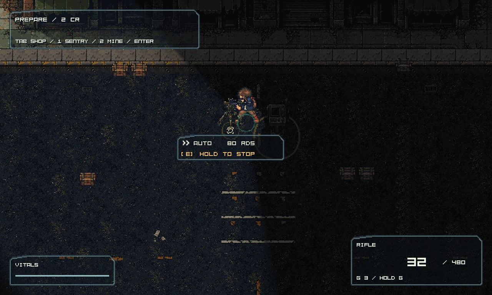
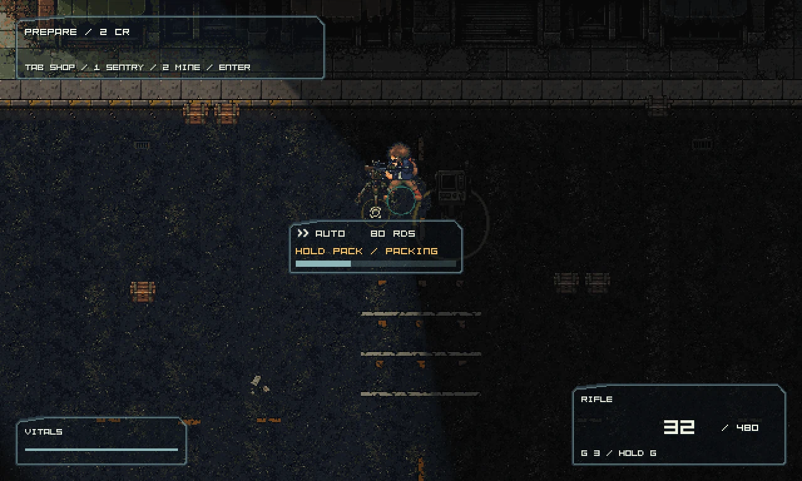
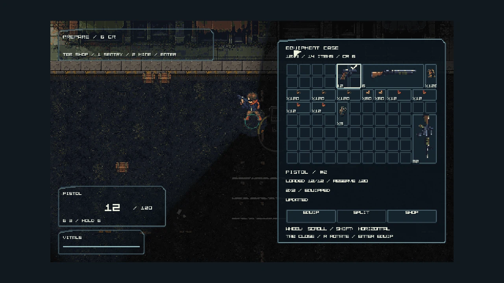
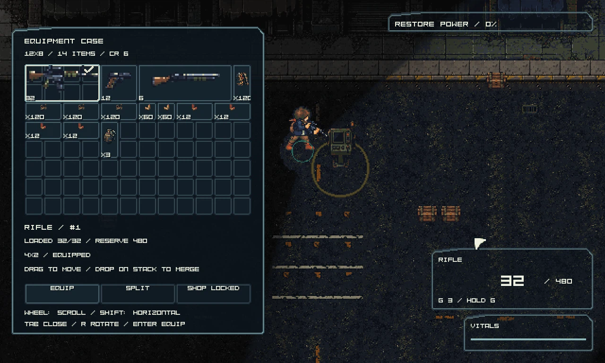
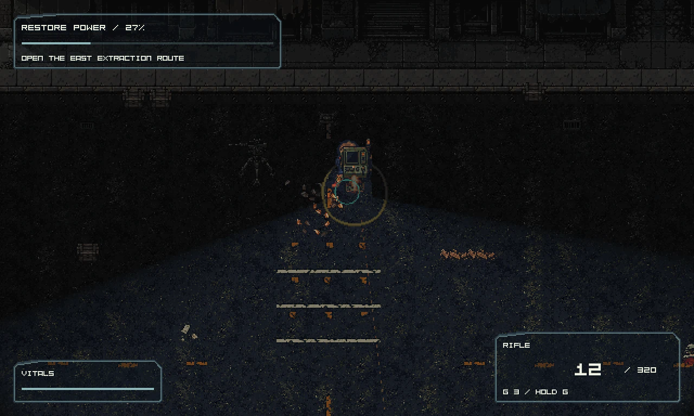
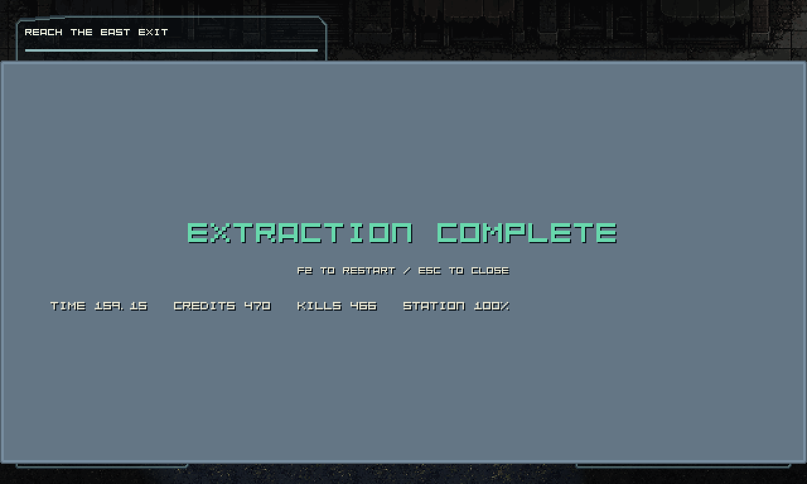

Tab → Shop → Buy. Select the sentry and Deploy/Enter, or T; hold LMB to place, Q/E to face, C to cancel. Near the device, hold B to pack or E for Auto/Hold.

Catalog, configured quantities/prices and real wallet; existing authored skin.

Purchased one-cell folded item with stable identity and remaining rounds.

In-flight deploy bar, submitted by the real game while the placement tool owns input.

Cancelled packing retains Auto; only a completed transfer enters carried Hold.

Held packing progress; no refund or ammunition refill.

Live owned case, rotation, equipped instance and native text at1600×900 letterboxed output.

World time continues; shop locked during battle and held close/fire barrier verified.

Selected encounter using purchased equipment and its real enable operation.

Victory:9657 ticks, peak106,669 shots,466 deaths,24 sentry shots,60HP. Automated smoke, not a human playtest.